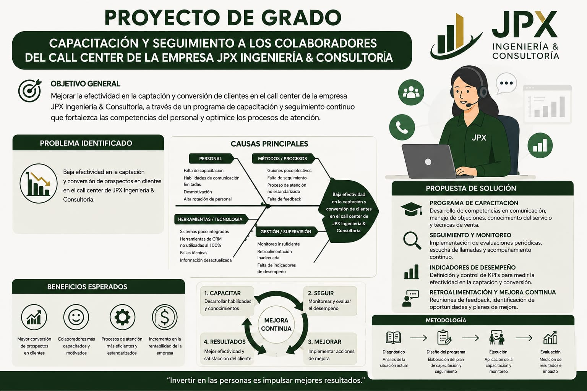

Estudiante de Tecnologías Emergentes - UPEA

El proyecto busca mejorar la efectividad de los colaboradores del call center de JPX Ingeniería & Consultoría, fortaleciendo sus conocimientos, habilidades y desempeño mediante un programa de capacitación y seguimiento.
La propuesta parte de identificar las principales causas que afectan la captación y conversión de prospectos en clientes, considerando aspectos relacionados con el personal, los métodos y procesos, las herramientas tecnológicas y la gestión o supervisión.
| Materia | Semestre | Turno |
|---|---|---|
| Tecnologías Emergentes I | Sexto | Noche |
| Administración de Base de Datos | Sexto | Noche |
| Análisis Numérico II | Sexto | Noche |
| Análisis y Diseño II | Sexto | Noche |
| Ingeniería de Control | Sexto | Noche |